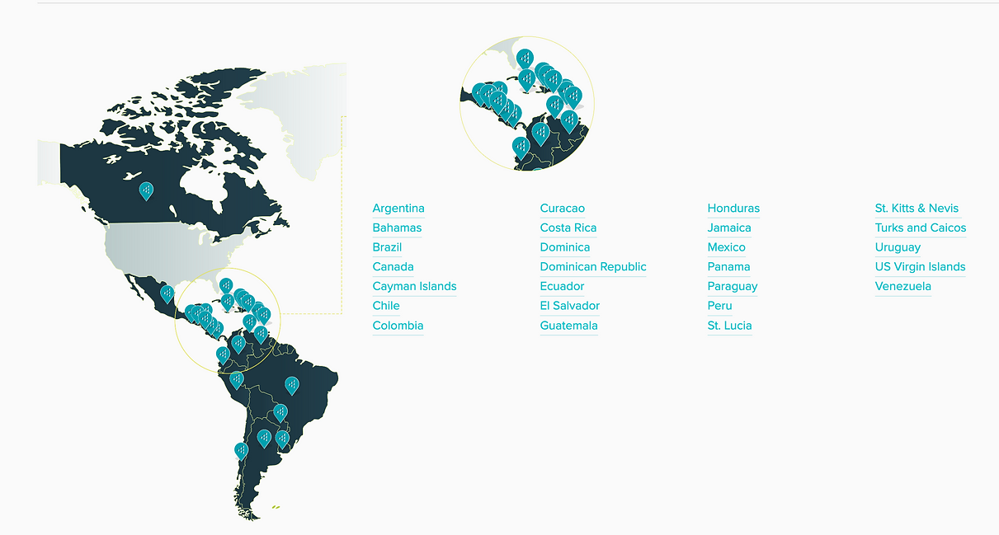
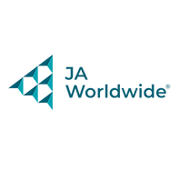
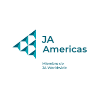
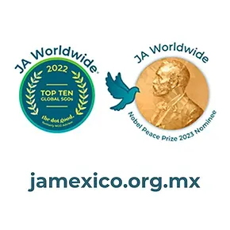

INSPIRE. PREPARE. SUCCED
En Junior Achievement México enfocamos nuestro trabajo en desarrollar habilidades en tres pilares principales, cultivar una mentalidad empresarial, preparar a los jóvenes para una salud financiera de por vida y capacitamos a los jóvenes para los empleos del futuro
REGISTRO A PROGRAMAS
JA México Alumni presenta "Herramientas de inteligencia artificial para negocios"
10 ago 2024, 12:00pm-1:30pm Vía Zoom
Cuentas contigo|Finanzas a tu ritmo
VERSIÓN AUTODIDACTICA Curso gratuito
NauFest 2024 (digital)
20 sep 2024, 9:00 am Evento Virtual
NUESTRA VISIÓN ES CLARA Y FUERTE
Brindar a los jóvenes herramientas para desarrollar la capacidad y la mentalidad necesarias para construir comunidades prósperas.
184,59 experiencias INSPIRE
75,453 Experiencias PREPARE
4,344 Experiencias SUCCEED
264,388 TOTAL EN 2023
IMPACTO EN MÁS DE 100 PAISES
  Una ONG moderna con más de 100 años de experiencia
En Junior Achievement, estamos sentando las bases para atender a un número exponencialmente mayor de estudiantes apoyando la innovación en toda nuestra red, realizando inversiones en tecnología y capital humano, y ejecutando asociaciones con organizaciones que se benefician de nuestro acceso inigualable a las escuelas y los estudiantes. Por cuarto año consecutivo JA se mantiene en el Top 10 Global de las ONGs con mayor impacto social y en 2023 fuimos nominados por segundo año consecutivo al Premio Nobel de la Paz